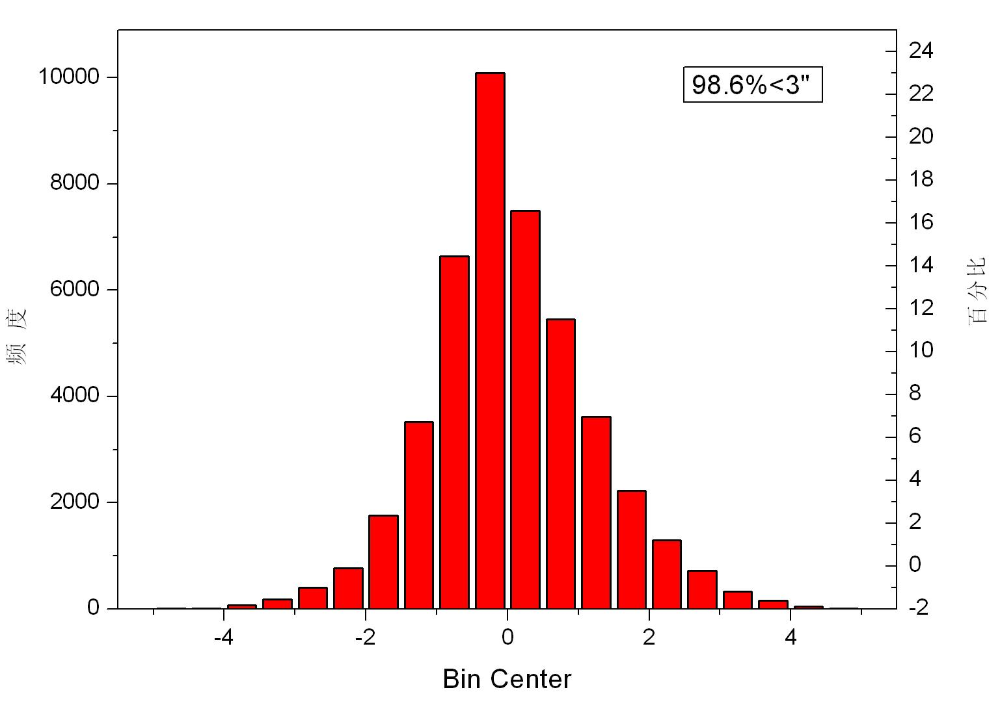

13.7米毫米波望远镜
2011-2012观测季节状态报告
( Status Report on the 13.7m Mm-Wave Telescope for
The 2011-2012 Observing Season )
徐烨、左营喜、马俊梅、吴洁青、李阳
庞兴海、巨秉刚、孙继先、逯登荣、王敏
中国科学院紫金山天文台青海射电天文观测站
德令哈毫米波观测基地
2011年10月
(一)望远镜系统概况及夏季维护与更新改造情况
在2011年夏季（7 - 9月）维护更新季节，更换了天线罩，对望远镜机械传动系统进行了常规检修和维护，用照相测量方法调整了天线面板，对去年年底安装的超导成像频谱仪系统进行了检修和维护。至9月10日基地陆续完成了夏季的各项维护（检修、更新）计划项目。
从9月10日开始，基地对望远镜进行了为期两周的“综合性能的天文测试”工作，包括望远镜指向测试、副面调焦、接收机9个beam方向图测试、9beam间隔矩阵和效率矩阵测试、天体谱线标准源的强度与视向速度等。
以下简要报告维护、更新、测试等方面的主要工作和结果：
（1）更换新的天线罩[1]。13.7米毫米波射电望远镜建站时的天线罩蒙皮材料型号为ESSCOLAM 10，为美国进口材料，根据技术指标，其使用寿命为20年。超过年限后，天线罩的机械强度和毫米波电磁波的透过率会迅速下降。旧圆堡在经过20年的使用后，从天线罩内看，蒙皮有多处“透亮”现象，有的裂缝长达10厘米，雨天漏水严重。蒙皮表面用手摸时会脱粉，出现严重的老化现象，限制更好发挥重点观测设备的作用。为了使望远镜在一系列技术更新和创新工作的基础上发挥出更高的科学价值，在“天文台站设备更新及重大仪器设备运行专项经费”的部分支持下，订购美国ESSCO公司采用3-ply ESSCOLAM 10蒙皮的M68-81-7000型天线罩，从7月20开始更换新天线罩，经过19天的日夜奋战，于8月10顺利封顶；
（2）用照相测量的方法调整天线面板 [2]。从2009年采用工业数字照相摄影测量系统以EL=52°为基准位置，对天线面板进行测量，并根据测量结果，进行面板预置调整，调整后的天线面板精度RMS为0.069mm；
（3）谱线OTF观测模式的成功建立[3]。为配合超导成像频谱仪安装2010年着手建了谱线OTF观测模式，超导成像频谱仪安装后，在半年的试运行过程中，逐步完善OTF观测模式，建立了数据自动处理系统，测试结果表明，超导成像频谱仪＋OTF观测模式比原来的单波束网格扫描（GRID）模式快30倍，且提高了成像质量；
（4）基于超导成像频谱仪的观测软件及测试软件的建立[4]。超导成像频谱仪安装后，控制系统多数软件都要随之更新，在2010年11月－2011年9月前，完成了基于超导成像频谱仪的观测软件。由于超导成像频谱仪比以前的系统复杂，18路接收机工作状态人工监视和调节复杂，也容易出错，而超导成像频谱仪的数字化程度很高，为实现自动化监视和调整状态提供了便利，在观测过程中不断优化程序，提高自动化程度，增强仪器状态监视、判断功能。建立了一系列测试软件和数据处理软件，使得测试方便快捷；
（5）天线主、副面机械系统检修 [5]。继续通过合同方式，由南京中科天仪中心主持对天线的机械部分做了详细检修，对所有轴承、齿轮进行了清洗、加油；
（6）接收机系统夏季维护[6]。对接收机所有系统进行了检修、更换和更新。其中：①更换了部分像元的HEMT放大器；2更换冷头；3在SIS偏置预放大盒的I+、I-间加1uF电容，减少干扰噪声，改善接收机的稳定性。
(二)望远镜性能的简要说明
1 天线及表面精度
德令哈基地毫米波望远镜口径为13.7 m (45英尺) ，使用地平式机架。望远镜的光学系统是经典“卡塞格林”系统，接收机工作在卡焦上。经过面板调整后的主反射面的表面精度rms为0.069 mm[1] 。
2 望远镜的跟踪
通过测试表明，方位跟踪误差的rms为1.6″，俯仰跟踪误差的rms为1.2″，对绝大部分天区，天线的跟踪误差在1-3"左右，完全符合观测要求（根据望远镜的波束大小，观测时望远镜的跟踪误差允许范围也被限制在5"以内，以保证足够的跟踪精度）。图2.2.1为天线在AZ和EL两个方向的跟踪误差测试结果：

图2.2.1 方位和俯仰的跟踪误差统计分布图。方位94.9%在3角秒内，俯仰98.6%在3角秒内。数据取自参考资料[7]。
3 望远镜指向
采用“连续谱总功率接收工作模式”对行星（金星、木星等）进行“五点指向观测”，同时对星状星云、SIO（2-1）脉泽源进行点源的谱线“五点指向观测”。通过2-3天时间，将观测取得的300-500组数据用指向修正模型进行拟合。从2006－2007观测季节开始，使用10个参数指向模型，新的指向模型在全天区域的适用性更好。图2.3.1是一个指向测试实例中指向源的空间覆盖。图2.3.2是指向修正模型计算出的南天区和北天区的残差分布。结果显示，该轮测试得到的望远镜南天指向误差(rms) 3.7″[8]，北天的指向误差 (rms) 为3.7″[9]。在综合测试过程中，“指向观测à模型拟合à修改验证”的过程要进行多轮。重复测试的结果都显示望远镜全天指向精度小于5″。
图2.3.1五点观测时南天 X-Cyg、JUPITER、SATURN、VENUS [8]和北天NGC7027、R-Cas、T-Cep[9]有效数据点在天空中的分布。
图2.3.2，模型拟合后得到的南天区方位残差和俯仰残差的 模型拟合后得到的北天区方位残差和俯仰残差的图示。
图示椭圆的长半轴为2.9″，短半轴为2.3″，方向角为6.3° 椭圆的长半轴为3.0″，短半轴为2.1″，方向角为24.1°
数据取自参考资料[8] 数据取自参考资料[9]
在望远镜运行阶段，指向状况还可以通过观测CO谱线点源（例如IRC+10216等晚期恒星）或者具有明显局部空间分布特征的部分CO面源（如S140等）来不定期地加以验证。
作为常规测试项目，在观测季节内，每个月还要进行一轮指向测试与验证。
4 望远镜的温标和效率参数（半功率波束宽度、方向图、月面效率、口面效率、波束效率、间隔矩阵、效率矩阵）
在分子谱线观测中，本望远镜采用标准的斩波轮校准方法(Ulich & Haas 1976; ApJS, 30, 247及随后的文献)，得到的温标是改正了大气吸收及欧姆损耗以后的“天线温度”，也就是文献中的TA*。对于星际分子云展源，通常这个温标要进一步改正望远镜的主波束效率ηmb，得到与同类望远镜可比的“观测辐射温度”TR*。这个温标代表望远镜的理想主波束与源空间亮温度分布的卷积，在我们的原始数据中已经按照的关系进行了波束效率改正。
半功率波束宽度(HPBW)反映了望远镜的分辨本领。对于口径为D、工作波长为λ的天线而言，HPBW=kλ/D，系数k与天线口面的照明函数有关。通过谱线五点观测的数据拟合得到在112.6GHz本振频率下，望远镜上边带(115.2GHz)和下边带(110.2GHz)半功率波束宽度HPBW均为52±3角秒[10]。二维波束分布可以通过对天体的扫描加以测量。对木星扫描获得的二维扫描结果如图2.4.1。
图2.4.1 望远镜二维方向图分布[下边带(110.2GHz)]。对木星进行的OTF观测，REGRID步长20″。
采用绝对强度校准，数据用天线温度表示。数据取自参考资料[10]。
图2.4.2 望远镜一维方向图分布【下边带(110.2GHz) 结果】。对木星进行一维扫描观测，步长15″，每个位置积分2秒钟。采用绝对强度校准，数据用天线温度表示。数据取自参考资料[10]。
图2.4.3 望远镜一维方向图分布【上边带(115.2GHz)结果】。对木星进行一维扫描观测，步长 15″，每个位置积分2秒钟。采用绝对强度校准，数据用天线温度表示。数据取自参考资料[10]。
月面效率,ηMOON, 是用来衡量望远镜对于“宽面源”的波束效率。在望远镜指向工作完成之后，将本振频率设置为112.6GHz对月面进行一维扫描，在考虑月相的修正以后，得到9个beam上下边带的月面效率 [11]，见表2.4.1。
表2.4.1 9个beam上下边带测得的月面效率
| |
beam1 |
beam2 |
beam3 |
beam4 |
beam5 |
beam6 |
beam7 |
beam8 |
beam9 |
| USB (115.2GHz) |
59.7±1.0% |
59.3±1.0% |
59.7±1.0% |
59.1±1.0% |
58.7±1.0% |
59.4±1.0% |
58.8±1.0% |
58.8±1.0% |
59.4±1.0% |
| LSB (110.2GHz) |
64.6±1.1% |
64.3±1.0% |
64.7±1.1% |
64.3±1.0% |
63.4±1.0% |
64.6±1.1% |
63.2±1.0% |
63.2±1.0% |
63.9±1.0% |
月面效率比采用行星测量得到的主波束效率要高，因为前者包含了主波束以外的部分“前向 (forward)”旁瓣成份。在实际观测中，目标天体（分子云）的尺度通常大于望远镜的波束宽度，则望远镜的波束效率相对地接近月面效率。但是这种接近往往并不是观测者需要的，因为旁瓣接收了来自观测方向以外的辐射。因此，对面源观测的射电望远镜，往往需要更低的旁瓣。望远镜旁瓣越低，用行星测量得到的“主波束效率”越接近“月面效率”。
图2.4.2对月面一维扫描得到的强度分布。测量时接收机的本振频率设置为112 .6GHz，扫描范围±1800″, 步长30″。观测时月相为-346.21°左右，月面亮温度323.3 K。数据取自参考资料[11]。
(左边是上边带(115.2GHz)beam5，右边是下边带(110.2GHz)beam5)
对于主要从事星际分子云等面源观测的望远镜而言，波束效率是一个重要的效率指标。测量望远镜主波束效率最恰当的方式是寻找一个与望远镜波束尺寸一致的天体来进行。但是，实际中并没有这样的天体（或人造）目标存在。因此，测量望远镜主波束效率是分别通过对月面、行星、谱线面源、谱线点源等目标的测量来进行。在进行五点指向观测的同时，通过前置黑体温标将观测结果校准为温度，同时可以得到望远镜的波束宽度，通过计算便得到望远镜的口面效率和主波束效率。
目前装调到13.7米毫米波射电望远镜的是一台3×3 像元的超导成像频谱仪，需要精确的测量9个beam之间的间隔矩阵和效率矩阵。在测试阶段，用高信噪比连续谱源、CO谱线源进行9个波束“轮流”五点观测，拟合得出各个波束观测的波束宽度、峰值强度、位置偏差等，计算出每个波束的主波束效率、口面效率、其它波束相对于中心波束（第5波束）AZ、EL方向的间隔矩阵、其它波束相对中心（第5波束）波束的效率矩阵，结果如下：
图2.4.3 望远镜下边带(110.2GHz)主波束效率与俯仰的图示。数据取自参考资料[12]。
图2.4.4 望远镜上边带(115.2GHz)口面效率与俯仰的图示。数据取自参考资料[12]。
通过图2.4.3、图2.4.4的结果，得到超导成像频谱仪系统第5个beam在上下边带的主波束效率和口面效率见表2.4.2：
表2.4.2 第五beam主波束效率和口面效率[12]
| |
ηMB1 |
ηMB2 |
hA |
| USB(115.2GHz) |
43.6% |
40.0% |
33.80% |
| LSB(110.2GHz) |
48.0% |
44.9% |
29.90% |
备注：ηMB1:用图2.4.3、图2.4.4的结果，将俯仰大于30度的值进行平均，用来校准，15o＜L≤250.5o，，B=±5o范围内的观测数据；ηMB2:将俯仰小于35度的数据进行平均，用来校准-10o≤L≤15o，，B=±5o范围内的观测数据；其中L表示银经，B表示银纬。
间隔矩阵测试结果见表2.4.3
表2.4.3 波束间隔矩阵[13]
| |
No1 |
No2 |
No3 |
No4 |
No5 |
No6 |
No7 |
No8 |
No9 |
| DAZ |
177.1 |
4.0 |
-170.0 |
175.7 |
0.0 |
-174.0 |
171.0 |
-3.0 |
-176.4 |
| DEL |
-173.3 |
-172.0 |
-176.0 |
4.0 |
0.0 |
-4.5 |
177.5 |
172.6 |
171.6 |
在进行效率矩阵测试时，除了连续谱点源、CO点源9beam“轮流”五点指向观测，还进行了CO面源中心位置9个beam“轮流”观测，得到望远镜周围beam相对于中心第5beam归一化的效率矩阵，结果见表2.4.4
表2.4.4 波束效率矩阵[14]
| |
beam1 |
beam2 |
beam3 |
beam4 |
beam5 |
beam6 |
beam7 |
beam8 |
beam9 |
| USB (115.2GHz) |
1.05 |
1.03 |
1.06 |
1.02 |
1 |
1.16 |
1.01 |
1.05 |
1.12 |
| LSB (110.2GHz) |
1.03 |
0.99 |
1.06 |
1 |
1 |
1.04 |
0.99 |
1 |
1.01 |
望远镜作为一个整体，对天体谱线标准源进行观测的数据精度通常用来反映天文观测能够达到的实际测量精度。在运行过程中，用该精度作为衡量整个望远镜仪器性能、工作状态、观测方法、以及数据归算处理等全过程的依据。
由于天线面板的重力形变与光学耦合变化，观测得到的天线温度随俯仰有一定的依赖关系。在“综合性能的天文测试”阶段，对谱线面源S140、NGC2264进行了中心点全天观测，得到谱线峰值强度与俯仰的关系（见图2.4.5和2.4.6）。
图2.4.5， 9个波束观测得到的S140的峰值强度随俯仰的图示。
数据已经过效率矩阵、主波束效率校准，数据取自报告[15]
图2.4.6， 9个波束观测得到的NGC2264的峰值强度随俯仰的图示。
数据已经过效率矩阵、主波束效率校准，数据取自报告[15]
从图2.4.5和图2.4.6可以看到，目前得到的北天谱线标准源S140和南天谱线标准源NGC 2264的12CO（1-0）、13CO（1-0）的峰值强度经过效率矩阵和主波束效率改正后，强度随俯仰有一定的依赖关系。
5 接收机的参数（频率工作范围、噪声温度、稳定性）
超导成像频谱仪是一台毫米波段3×3 像元的多波束接收机，数据产出速率约25MByte/s。该设备主要包括：9个边带分离型超导SIS混频器、无调谐数字本振源、全数字偏置电源、独立中频、宽带高分辨数字频谱仪等多项新技术，成功实现了大规模毫米波系统集成。该设备是国际上毫米波段的第一例基于边带分离技术原理的多波束接收机，也是我国射电天文领域研制的第一台多波束接收机。按照标准的波段设置要求，该波段的接收机工作频率范围在85-115 GHz。本观测季节当本振频率为112.6 GHz时，接收机的噪声温度Trx的实测值见图2.5.1 [16]，而包含了地球大气噪声、圆堡等辐射贡献在内的“系统温度”Tsys的测量值分布在图2.5.2中显示。这些系统温度的数据有助于观测者估计项目所需要的观测积分时间和灵敏度。
图2.5.1. 接收机噪声温度TRX的分布【本振频率112.6GHz】。横坐标是Beam号，
纵坐标是单边带接收机噪声温度TRX (K)，红色圆点为上边带(115.2GHz)测
试结果，黑色方框为下边带(110.2GH)测试结果[16]。
图2.5.2. 系统温度的分布【本振频率112.6GHz】。横坐标是Beam号， 纵坐标是单边带工作方式下测量的系统温度Tsys (K)，红色圆点为下边带(110.2GHz)测试结果，黑色方框为上边带(115.2GHz)测试结果。它包含了接收机、天线与光学系统、圆顶和蒙皮、以及地球大气的贡献。在冬季的相当时间范围内，由于气温普遍低于测试时间（10月份），因此，预计的系统温度值应当略低于本图的分布。数据取自参考资料[17]。
本观测季节，望远镜可以从事85-115 GHz整个波段内的观测。多次重复测量结果表明，当SIS工作在第一台阶时，10分钟内系统相对稳定性DG/G＜ 4′10-3。图2.5.3显示了接收机在工作波段内的相对稳定性的典型测量结果。
图2.5.3 计算机以5Hz采样率采集中频检波输出4小时。
数据取自2011接收机夏季维护通报[18]。
6 后端频谱仪-高分辨数字频谱仪FFTS技术参数[19]（带宽、通道数、分辨率、稳定性）
装调到13.7米望远镜的超导成像频谱仪系统，后端由18路高分辨数字频谱仪FFTS组成，带宽均为1000 MHz，每路带宽的通道数均为16384个。从2007年4月，频谱仪已经在13.7米望远镜上进行了实验观测并取得了成功。经过测试表明，目前18路数字频谱仪在带宽、频谱分辨本领、动态范围、稳定性等关键技术指标上都有新的突破。这种频谱仪对河外星系的谱线接收、高分辨谱线观测以及深度积分的谱线观测等极限观测项目显示出新的使用潜力。经过测试，在不同的频谱仪带宽下，包含实际大气变化在内的系统整体Allan方差时标>100秒[19]。FFTS也可以同时观测多条谱线，观测者可以利用“谱线观测频率计算软件（FFTSfreqset）”（在基地网页上下载）查看。
表2.6.1 望远镜频谱后端FFTS的基本参数
|
工作带宽 |
通道频率间
隔理论值 |
通道频率间
隔测试值 |
12CO速
度间隔 |
13CO速
度间隔 |
|
1000 MHz |
61.0 kHz |
61.0 kHz |
0.167 |
0.159 |
7 数据存储系统
为适应OTF观测海量数据存储，配置了数据存储系统，该系统由两台DELL Powerage NX1950，4个EMC存储柜，存储容量为45TB ，操作系统为scientific linux 5.4，该系统同时实现OTF数据预处理。
8 观测模式
·在接收机工作频率范围内，望远镜以单边带下的位置开关模式进行谱线单点观测。
·使用“超导成像频谱仪”+OTF同时观测CO及其同位素的谱线。
·谱线观测采用标准的斩波轮方法进行温度定标。
·可以进行3 mm波段大气不透明度的测量。
·连续谱单点、成图和OTF观测。
9 资料格式
控制系统输出数据为国际通用的标准FITS格式。用户可以使用GILDAS/CLASS等一些通用的射电谱线数据处理软件来进行处理。
[注]：GILDAS/CLASS是由法国Grenoble天文台与IRAM合作开发的射电天文数据处理软件。
10 数据下载
观测数据可以从www.radioast.csdb.cn和mirror.radioast.csdb.cn数据库下载，没开放数据需要用户登录后才能下载，用户名为观测者课题编号，密码由课题安排人员设定后告知课题申请者。用户可以从网页http://www.radioast.csdb.cn/viewrecord.php查看观测记录来了解课题观测情况。
(三)开放观测课题的申请和日程安排
2011-2012观测季节
德令哈基地13.7米毫米波望远镜最新状态信息将及时公布在基地网页：http://www.dlh.pmo.cas.cn上。
(四) 近几个观测季节内望远镜从事的观测课题举例
1 银河系分子云物理结构的探测；
2 年轻星的高速气体外流和动力学；
3 星际化学；
4 银河系恒星形成区内分子气体的分布；
5 银河系动力学；
6 超新星遗迹与星际介质相互作用、宇宙射线源；
7 恒星演化和晚型恒星的分子气体观测；
8 太阳系天体的分子谱线观测；
9 月球的毫米波辐射性质的观测研究；
10 地球大气的毫米波电波传播和辐射物理性质的观测研究；
(五) 使用望远镜进行观测
1 数据处理、数据备份
基地为观测研究人员准备了优质、可靠、实用方便的数据处理操作平台，以SUN BLADE 2000、PC为硬件平台，操作系统有LINUX、WINDOWS， GILDAS/CLASS作为基地处理毫米波谱线数据的标准软件。观测数据可在基地即时处理。基地指派的天文观测助手将协助观测者熟悉数据处理的操作。
基地指派的天文观测助手将负责为观测者备份光盘数据。观测者也可以通过基地网络将数据传送回自己的研究所。基地将为所有观测项目备份其数据。根据国际惯例，课题观测的所有数据将由课题申请者独占使用一年后成为开放共享数据。跨年度的长期项目在观测结束日起满一整年以后成为开放共享数据。
2 交通与生活服务
基地将为所有观测人员做好迎送接待、食宿、交通、网络通讯、应急供氧等支撑工作。经过2003年夏季对办公及招待所的装修，基地的工作和住宿环境得到了明显改善。前来基地从事观测课题研究的人员食宿交通等费用自理。由于地处西部，交通不便,我们推荐前来基地观测的研究人员事先计划安排好车（机）票。目前，中国铁路客户服务中心网站http://www.12306.cn提供用户注册、列车时刻表查询、余票查询、票价查询、购票（含网上支付）、订单查询、改签、退票等服务，实行实名制购票，本基地不再承担来站人员的购票事宜，请大家自行解决。
基地负责德令哈市当地的接送站。到达基地前，请与基地办公室巨秉刚先生联系接站时间和具体要求，电话(0977)8224969。
德令哈基地地处青藏高原，干燥缺氧，冬季气候寒冷。基地提醒前来工作的天文学家携带足够的御寒衣物，做好充分的适应准备。
(六) 意见建议、或进一步的联系咨询
本报告涉及的更新改造项目和综合性能的天文测试内容是德令哈毫米波观测基地全体工作人员及其与毫米波-亚毫米波技术实验室、南京中科天仪中心、恒星形成团组等单位的技术人员和天文学研究人员共同努力完成的。需要了解基地望远镜更多内容、提出意见（包括对本报告的质疑）或建议时，请与基地徐烨研究员联系： xuye@pmo.ac.cn。对本报告有关内容的质询或批评也请发给上述地址。观测项目实施以后，欢迎研究人员对观测中的天文和技术问题以及各种观测服务工作出现的问题等提出意见和建议。在基地网页上也公布有基地全部工作人员的Email地址。
七 参考资料和测试报告
[1] 2011.8.9，《13.7米毫米波射电望远镜新天线罩安装成功V1.1》，德令哈毫米波观测基地；
[2] 李阳 孙继先 左营喜 马俊梅乔相杰 何小路等,2011.8,《2011照相测量面板调整总结v1.3》，德令哈毫米波观测基地；
[3] 逯登荣、徐烨、杨戟、杜甫君、孙继先，2009.6.22，《连续谱OTF测试结果V1.0》，德令哈毫米波观测基地；
[4] 孙继先、逯登荣、林振辉，2010.10，《基于超导成像频谱仪在13.7m望远镜上的OTF观测方法》，德令哈毫米波观测基地；
[5] 李阳、孙继先，2011.7,《望远镜机械系统维护通报》，德令哈毫米波观测基地；
[6] 左营喜、吴洁青、张旭国、李振强等，2011.8，《接收机系统夏季维护通报》，德令哈毫米波观测基地；
[7] 孙继先、何小路、乔相杰、李阳，2011.9.15，《跟踪误差测试报告（2011-09-15）》，德令哈毫米波观测基地；
[8] 巨秉刚、孙继先，2011.09.14，《五点指向观测快报_删除ORIA(2011-09-14)》，德令哈毫米波观测基地；
[9] 巨秉刚、孙继先，2011.9.19，《北天区五点指向观测快报(2011-9-19)》，德令哈毫米波观测基地；
[10] 孙继先、巨秉刚、何小路、王敏、李振强，2011.9.21，《方向图扫描快报（2011-09-21v2）》, 德令哈毫米波观测基地；
[11] 王敏、逯登荣、巨秉刚、孙继先、乔相杰，2011.9.14，《月面效率测试报告(2011-09-14) V4.0》，德令哈毫米波观测基地；
[12] 巨秉刚、孙继先、苏扬、逯登荣，2011.10.27，《2011-2012望远镜主波束效率校准V1.1》，德令哈毫米波观测基地；
[13] 孙继先、巨秉刚，2011.9.22，《波束效率矩阵、间隔矩阵测试报告（2011-09-22）》，德令哈毫米波观测基地；
[14] 巨秉刚、逯登荣、孙继先、王敏，2011.9.28，《效率矩阵修改报告20110928V1.1》，德令哈毫米波观测基地；
[15] 王敏，2011.11.9，《主波束效率校准后的标准源观测快报(2011-11-09)》，德令哈毫米波观测基地；
[16] 左营喜、吴洁青、张旭国、李振强等，2011.8，《2011接收机夏季维护通报(七) 8-25 28 更换HEMT 低温测试TRX》，德令哈毫米波观测基地；
[17] 李振强、张旭国，2011.8，《Tsys测试》，德令哈毫米波观测基地；
[18] 左营喜、吴洁青、张旭国、李振强，2011.7，《2011接收机夏季维护通报(五) 7-30 31 低温测试TRX 干扰谱稳定性》，德令哈毫米波观测基地；
[19]孙继先，2011.10.28，《FFTSSKYAllan测试（2011-10-28）》，德令哈毫米波观测基地；
附件1：封顶后的新圆堡
附图1 新圆堡封顶后的图片